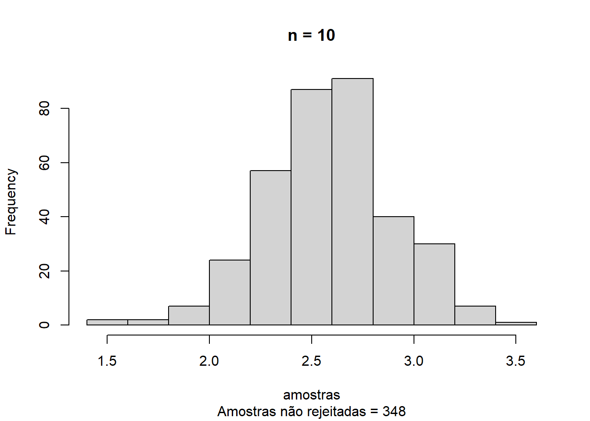
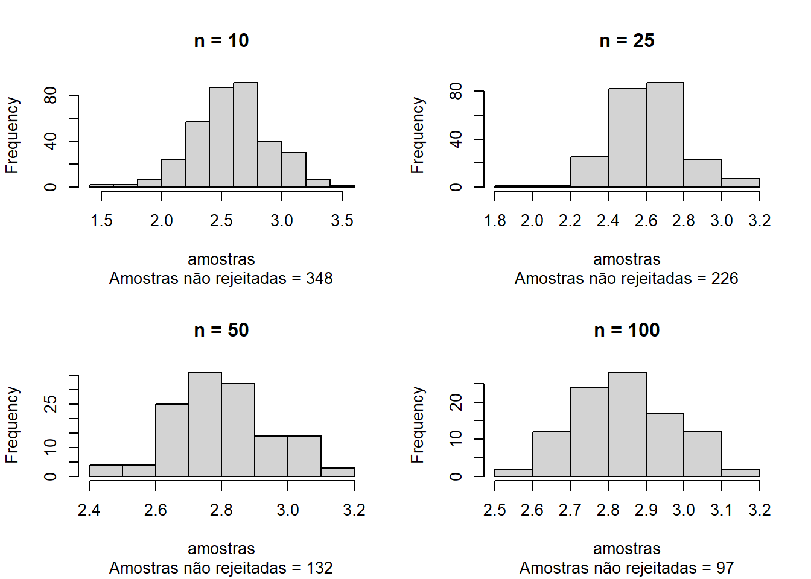
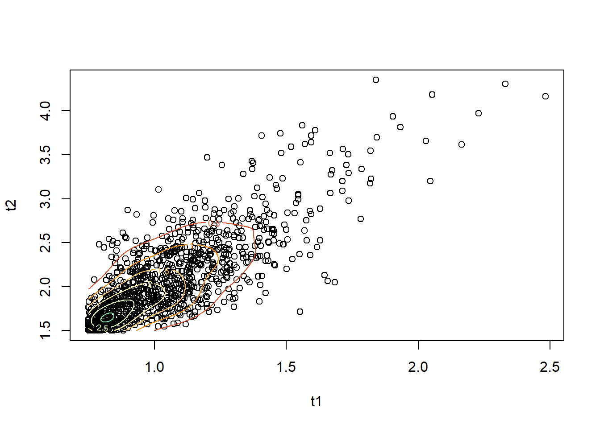

Show the code
if (!require("pacman")) install.packages("pacman")
pacman::p_load(MASS)Técnicas computacionais em estatística | Prof. Dr. Helton Saulo Bezerra dos Santos
September 30, 2025
A distribuição Laplace padrão tem densidade \(\mathbf{f(x)=\frac{1}{2}e^{-|x|},x\in \mathbb{R}}\). Use o método da transformada inversa para gerar uma amostra aleatória de tamanho 1000 dessa distribuição (plote um histograma).
Precisamos calcular a inversa da distribuição, tal que se \(\mathbf{f(x)=\frac{1}{2}e^{-|x|}},\) temos \(\mathbf{x=F^{-1}(u) \rightarrow u = \frac{1}{2}e^{-|x|}}\), pois este é o inverso da acumulada. Como desejamos isolar \(\mathbf{x}\), devemos manipular a equação tal que \(\mathbf{2u=e^{-|z|} \rightarrow ln(2u)=-|x| \rightarrow -ln(2u)=|x| \therefore x = ln(2u) \cup-ln(2u)}.\) Se tomarmos os limites de \(\mathbf{e^{-|x|}}\), temos que \(\mathbf{\lim_{x\to\infty} e^{-|x|}=0}\), e \(\mathbf{\lim_{x\to0}e^{-|x|}=1}\). Como temos a relação \(\mathbf{2u=e^{-|x|}}\), sabemos que \(\mathbf{0 \leq 2u \leq 1 \rightarrow 0 \leq u \leq \frac{1}{2}}\). Desta forma, para gerar valores da distribuição Laplace padrão, iremos gerar valores uniforme para u tal que \(\mathbf{u\sim U[0,\frac{1}{2}]}\). Além disso, geraremos uma segunda uniforme \(U_s\sim U[0,1]\) como suporte para garantir a geração de valores positivos e negativos, dado que \(\mathbf{x = \pm ln(2u)}\), tal que: \[ x= \begin{cases} 0 \leq U_s < 0.5 \rightarrow x = -ln(2u)\\ 0.5 \leq U_s \leq 1 \rightarrow x = ln(2u) \end{cases} \] E, desta forma, garantimos gerar valores em todo o suporte de x.
Dado a densidade \(\mathbf{f(x|\theta)}\) e a densidade a priori \(\mathbf{\pi(\theta)}\), se observamos \(\mathbf{x=x_1,...,x_n}\), a distribuição a posteriori de \(\theta\) é \[\mathbf{\pi(\theta|x)=\pi(\theta|x_1,...,x_n)\propto\prod_i(x_i|\theta)\pi(\theta)},\] em que \(\mathbf{\prod_i(x_i|\theta)=\mathcal{L}(\theta|x_1,...,x_n)}\) é a função de verossimilhança.
Para estimar uma média normal, uma priori robusta é a Cauchy. Para \(\mathbf{X_i\sim N(\theta,1),\theta \sim Ca(0,1)}\), a distribuição a posteriori é \[\mathbf{\pi(\theta|x)\propto \frac{1}{\pi}\frac{1}{1+\theta^2}\frac{1}{(2\pi)^{\frac{n}{2}}}\prod^n_{i=1}e^{\frac{-(x_i-\theta)^2}{2}}}.\] Seja \(\mathbf{\theta_0=3,n=10}\), e gere \(\mathbf{X_1,...,X_n\sim N(\theta_0,1)}\). Use o algoritmo da Aceitação-Rejeição com uma candidata Cauchy \(\mathbf{Ca(0,1)}\) para gerar uma amostra da distribuição a posteriori. Avalie quão bem o valor \(\theta_0\) é recuperado. Extenda o código de maneira que \(\mathbf{n=10,25,50,100}\). Assuma que \(\mathbf{M=\mathcal{L}(\hat{\theta}|x_1,...,x_n)}\), ou seja \(\mathbf{M}\) é a função de verossimilhança avaliada no estimador de máxima verossimilhança.
Para utilizar o método de aceitação-rejeição, desejamos gerar um valor X de uma distribuição alvo. Para isso, primeiramente devemos derivar a densidade alvo. No caso, a posteriori será a convolução da verossimilhança com a priori. Neste caso, tomaremos uma priori Cauchy(0,1) e a verossimilhança fornecida por dados gerados a partir de uma Normal, de parâmetros média 3 e variância unitária, isto é, \(\mathbf{D} = (d_1,...,d_n) \sim N(3,1)\). Utilizaremos ainda uma densidade candidata/instrumental Cauchy(0,1), isto é, geraremos um valor Y desta distribuição, e iremos avaliar se Y é tal que \(u \leq \frac{1}{M}\frac{f(y)}{g(y)},\) onde \(u\sim U[0,1], f(y)\) é a posteriori avaliada em Y e \(g(y)\) é a densidade da Cauchy(0,1) no ponto Y. Se de fato u for menor ou igual a esta quantidade, então tomaremos X = Y. Irei fixar o número de simulações Nsim = 10.000.
n = 10
theta0 = 3
set.seed(251106723)
x = rnorm(n,3)
M = prod(dnorm(x,mean(x)))
aceito = 0
Nsim = 10000
amostras = numeric(Nsim)
for (i in 1:Nsim){
theta = rcauchy(1,0,1)
posteriori = prod(dnorm(x, mean = theta, sd = 1)) * dcauchy(theta, 0, 1)
candidata = dcauchy(theta,0,1)
if (runif(1) <= (1/M)*(posteriori/candidata)){
aceito = aceito + 1
amostras[i] <- theta
}
}
amostras <- amostras[amostras != 0]
main = paste0("n = ", n)
sub = paste0("Amostras não rejeitadas = ", aceito)
hist(amostras,main=main,sub = sub)
par(mfrow=c(2,2))
for (n in c(10,25,50,100)){
theta0 = 3
set.seed(251106723)
x = rnorm(n,3)
M = prod(dnorm(x,mean(x)))
aceito = 0
Nsim = 10000
amostras = numeric(Nsim)
for (i in 1:Nsim){
theta = rcauchy(1,0,1)
posteriori = prod(dnorm(x, mean = theta, sd = 1)) * dcauchy(theta, 0, 1)
candidata = dcauchy(theta,0,1)
if (runif(1) <= (1/M)*(posteriori/candidata)){
aceito = aceito + 1
amostras[i] <- theta
}
}
amostras <- amostras[amostras != 0]
main = paste0("n = ", n)
sub = paste0("Amostras não rejeitadas = ", aceito)
hist(amostras,main=main,sub = sub)
}
Notamos que \(\theta_0\) tende a ser melhor recuperado para valores maiores de n. Entretanto, o aumento do valor de n também implica numa maior quantidade de valores simulados rejeitados, indicando que a priori Cauchy(0,1) não é apropriada para este caso e/ou que este método é ineficiente ante a outras possibilidades.
Gere 200 observações aleatórias de uma distribuição normal multivariada de dimensão 3 com vetor de médias \(\mu=(0,1,2)^T\) e matriz de covariância \[ \begin{bmatrix} 1 & -0.5 & 0.5 \\ -0.5 & 1 & -0.5 \\ 0.5 & -0.5 & 1.0 \end{bmatrix}. \] Use o método de decomposição de Cholesky.
Podemos utilizar a decomposição de Cholesky para gerar valores de uma normal multivariada à partir da geração de valores normal univariado.
[,1] [,2] [,3]
[1,] 1.1521826 0.1872210 5.0230496
[2,] 0.4588406 -0.1879680 3.4164468
[3,] 1.2312254 0.1287265 2.5375316
[4,] -0.4598803 2.1113306 0.3159352
[5,] 0.1932503 0.7523005 2.5183003
[6,] 0.7210722 0.3108864 3.6447183Considere o artigo “Bivariate Birnbaum–Saunders distribution and associated inference” (Kundu et al., 2010), disponível em PDF, onde os autores apresentam uma formulação para a distribuição bivariada de Birnbaum–Saunders (BVBS). A geração de dados desta distribuição é descrita na equação (8) do artigo. Utilize a parametrização apresentada no artigo para simular 1.000 observações de um vetor aleatório bivariado \(\mathbf{(T_1,T_2)}\) com distribuição \(BVBS\mathbf{(\alpha_1=0.5, \alpha_2=0.8, \beta_1=1.0, \beta_2=2.0, \rho=0.7)}\). Apresente um gráfico de dispersão dos dados gerados.
a1 <- .5
a2 <- .8
b1 <- 1
b2 <- 2
rho <- 0.7
n <- 1000
set.seed(150167636)
u1 <- rnorm(n)
set.seed(251106723)
u2 <- rnorm(n)
z1 <- ((sqrt(1+rho) + sqrt(1-rho))/2)*u1 + (((sqrt(1+rho) - sqrt(1-rho))/2)/2)*u2
z2 <- ((sqrt(1+rho) - sqrt(1-rho))/2)*u1 + (((sqrt(1+rho) + sqrt(1-rho))/2)/2)*u2
t1 <- b1 * ((1/2)*a1*z1 + sqrt((((1/2)*a1*z1)^2)+1)^2)
t2 <- b2 * ((1/2)*a2*z2 + sqrt((((1/2)*a2*z2)^2)+1)^2)
z <- kde2d(t1, t2, n = n)
plot(t1, t2)
contour(z, lwd = 1, add = TRUE,col = hcl.colors(10, "Spectral"))